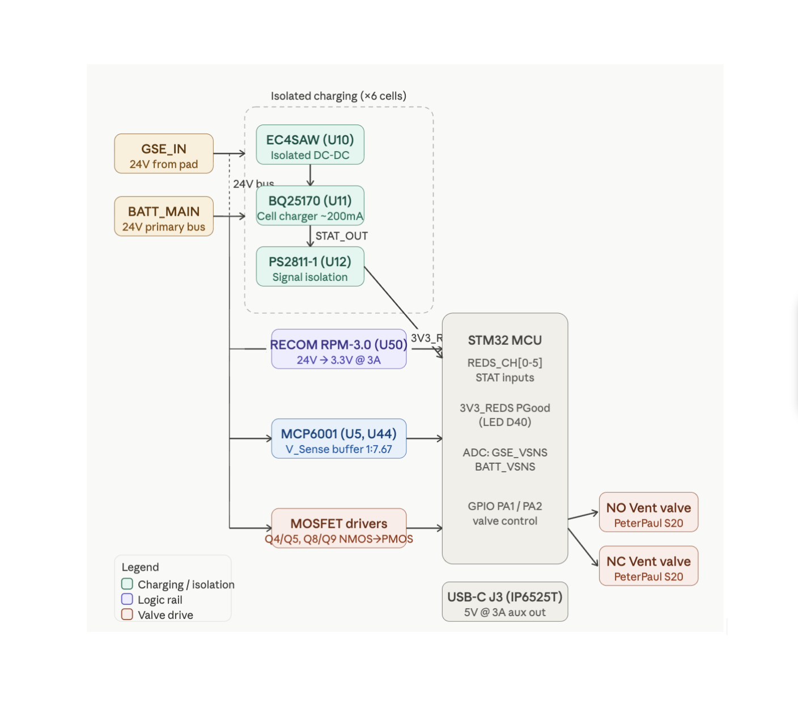
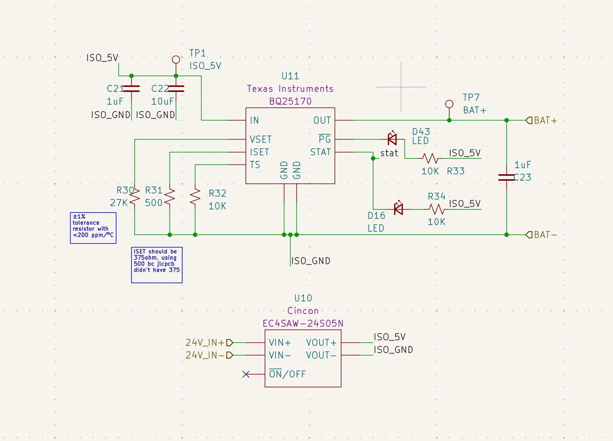
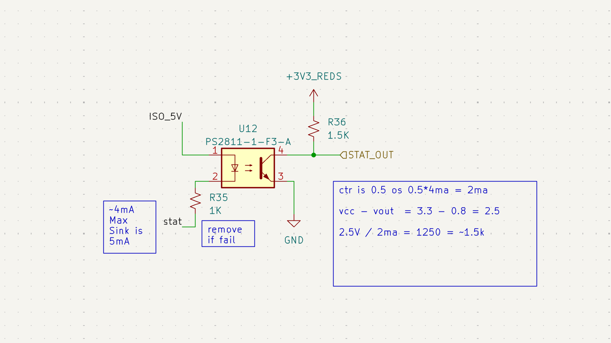
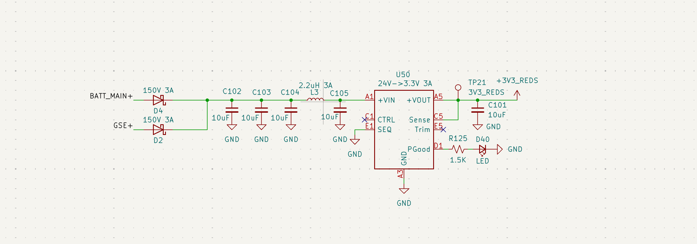
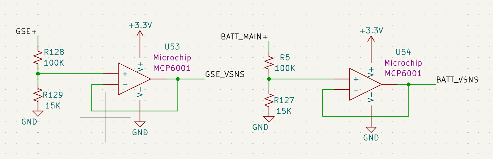
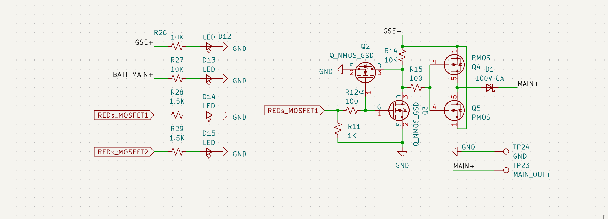
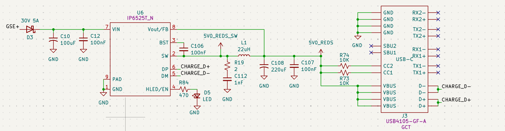

Battery & REDS
Overview
The REDS (Recovery Event Driver System) is a safety-critical power hub. It provides an isolated environment for 6-cell battery charging, precise rail monitoring via buffered dividers, and high-side switching for propulsion vent valves.

Figure 4: High-level block diagram of charging isolation and recovery logic.Stakeholder Relevance
- Avionics: Critical facet of power on electronics; ensures logic survival during high-current events.
- Propulsion: Drive capacity for PeterPaul Series 20 (NO/NC) vent valves.
- Operations: Pre-launch camera power and battery health monitoring.
Power System Reference
| Net Name | Source | Nominal Voltage | Max Current | Notes & Hardware Specs |
|---|---|---|---|---|
| GSE+ | Ground pad | 24V | 5A* | External input used at pad. |
| BATT_MAIN+ | 6S LiPo | 22.2V - 25.2V | — | Primary vehicle battery bus. |
| GND | Ground | 0V | — | Reference for ECU logic and valve returns. |
| ISO_5V | Cincon EC4SAW | 5V | 600mA | Isolated supply per charging block; floats relative to cell GND. |
| ISO_GND | Cincon EC4SAW | — | — | Isolated return; MUST NOT be shorted to System GND. |
| 3V3_REDS | RECOM RPM-3.0 | 3.3V | 3A | Independent logic rail; survives primary ECU bus failure. |
| 3V3_MAIN | ECU Buck Reg | 3.3V | — | Primary logic rail for non-recovery ECU functions. |
| GSE_VSNS | MCP6001 | 0–3.3V | — | Buffered ADC signal scaling GSE+ rail (1V:7.67V). |
| BATT_VSNS | MCP6001 | 0–3.3V | — | Buffered ADC signal scaling BATT_MAIN+ (1V:7.67V). |
| 5V0_REDS | IP6525T | 5V | 3A | Aux rail for Insta360; sourced from GSE+ via D3. |
| STAT_OUT[0-5] | PS2811-1 | 3.3V Logic | — | Isolated charge status (Active-Low) from BQ25170. |
Design Details
1. Isolated Charging Architecture
To prevent ground loops and cell-balance shorts during charging, the system utilizes 6 independent charging blocks.

Figure 5: Isolated charging stage showing Cincon DC-DC and BQ25170.
Figure 6: Isolated status feedback via PS2811-1 Optocouplers.- Power Isolation: Each cell uses a Cincon EC4SAW (U10) to decouple the GSE power from the specific battery cell potential.
- Signal Isolation:
STAT_OUTsignals use PS2811-1 optocouplers (U12) to cross the isolation barrier to the 3.3V logic rail. - Design Deviation (ISET): Target I_SET was 375 Ω. Current assembly uses 500 Ω (±1%, <200 ppm/ºC) due to availability, resulting in a slightly lower, safer charge rate for the BQ25170.
2. 3.3V_REDS Logic Rail
The 3V3_REDS rail is independent of the main ECU 3.3V bus to ensure recovery capability during bus failures.

Figure 7: U50 RECOM regulator stage with input Pi-filter.- Regulator: U50 (RECOM RPM-3.0) 24V to 3.3V.
- Input Pi-Filter: L3 (2.2 μH) and C102-104.
- Thermal Note: Inductor L3 is rated for 3A. While the RECOM module is robust, L3 is the primary thermal bottleneck if draw exceeds 3A.
3. Rail Voltage Sensing (MAIN & REDS)
The ECU employs two identical dual-stage sensing circuits to monitor the health of the 24V GSE and Battery rails for both the primary ECU (MAIN) and REDS.

Figure 8: V_Sense MAIN buffers (U53/U54) monitoring primary power rails.- Circuit Identity: The REDS sensing stage (U5/U44) is topologically identical to the MAIN stage (U53/U54) shown above.
- Precision Divider: A 100 kΩ / 15 kΩ network provides a 1V : 7.67V scaling ratio.
- High-Impedance Buffering: MCP6001 Op-amps are configured as voltage followers. This ensures that the sensing network does not load the battery and prevents ADC input impedance from introducing measurement error.
- Component Requirement: Resistors must be ±1% tolerance or better to ensure measurement accuracy across the flight temperature envelope.
4. Valve Drive Circuitry
The board features two high-side MOSFET driver channels (Q4/Q5 and Q8/Q9) designed to drive solenoids.

Figure 9: Typical NMOS-to-PMOS level shifting for 24V valve control (Channel 1 shown).- Topology: NMOS-to-PMOS level shifting (3.3V to 24V).
- Flyback Protection: Integrated 100V 8A Schottky diodes (D1, D7) clamp inductive spikes from solenoids.
- Safety Logic: NMOS pulldowns ensure valves remain in their "Normal" state if logic pins float.
5. Insta360 Camera
A dedicated high-current 5V rail is provided for external peripherals, primarily the Insta360 flight camera.

Figure 10: IP6525T Step-down converter for USB-C power delivery.- Regulator: U6 (IP6525T) provides a stable 5V output at up to 3A.
- Power Source: This rail is tied to GSE+ via a 30V 5A Schottky diode (D3).
- Ops Note: Ops must verify the camera switches to internal battery smoothly during disconnect to ensure recording does not stop at T-0.
- Filtering: A 22 μH inductor (L1) and a bulk 220 μF capacitor (C108) minimize switching ripple to prevent video artifacts.
- Indicator: LED D5 (Green) indicates the 5V Aux rail is active.
Hardware–Software Interface
Optocoupler Logic Calculation
The pull-up resistor (R36) for the STAT_OUT signal is 1.5 kΩ.
* CTR Calculation: * V_{CC} - V_{OUT} = 3.3V - 0.8V = 2.5V
* 2.5V / 2mA = 1250 Ω ≈ 1.5 kΩ
* Diagnostic: If status signals fail to toggle, verify the optocoupler is driving at least 2mA.
Errata / Revision Notes
- Diode Corrected: Fixed orientation of 30V 2A diode (reversed in v1.0).
- ADC Simplification: Deleted ADC from schematic for charge status; routed charging status to main ECU MC.